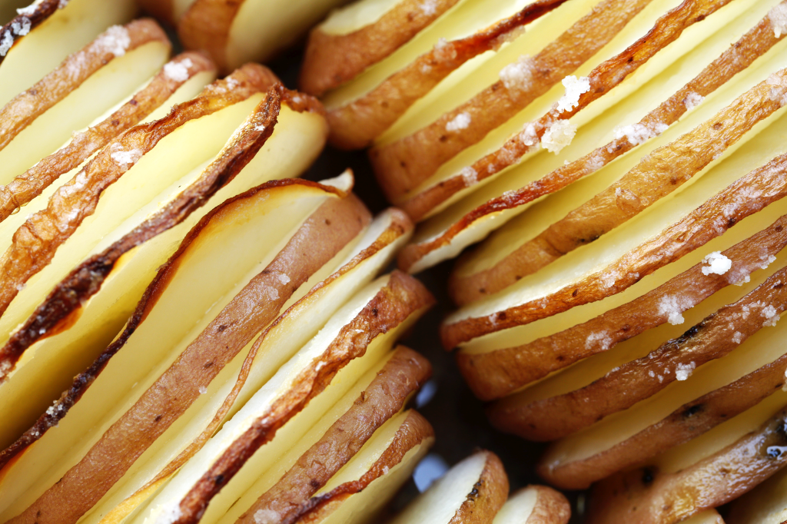

Potatoes with rosemary and sea salt
A great marriage is one where each person, without agenda, celebrates the unique and distinctive characteristics of the other, and lovingly helps them be the best possible version of themselves. When I see a couple who express this in their relationship I am always moved and inspired, because they are so much more together than they could possibly be individually. In my world I have a number of friends whose marriages have worked out this principle for many years and each day they bring joy to each other, and those in their sphere of influence.
Ingredients: (Serves 4-6):
- 8 medium sized red-skinned potatoes
- 1 tablespoon good olive oil
- sea salt and freshly ground black pepper
- 4 sprigs of fresh rosemary
Cooking instruction:
- Preheat the oven to 180°C.
- Slice the potatoes very thinly using a mandolin.
- Place the sliced potatoes in a medium-sized glass bowl and cover them with cold water.
- Let the potatoes sit for about 20 minutes, then drain them and dry them well with a tea towel.
- Pick the leaves off the rosemary and place them in the base of a 20 cm round or 18 cm square dish.
- Stack the potato slices tightly in the dish, accounting for slight shrinkage during cooking.
- Drizzle with the olive oil and season well with sea salt and black pepper.
- Bake for 45 to 55 minutes, until the potatoes are golden and crispy around the edges.
- Serve immediately.